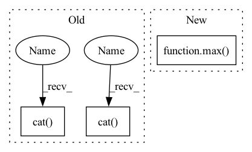

Pattern ID :4963
Before Change
// it"s not intuitive to remove edges from a graph represented as `edge_index`
edge_weight_remove = torch.zeros(edges_to_remove.size(1)) - 1e5
edge_weight = torch.cat(
[torch.ones(edge_index.size(1)), edge_weight_remove], dim=0)
edge_index = torch.cat( [edge_index, edges_to_remove], dim=1) .cpu().numpy()
adj_matrix = sp.csr_matrix(
(edge_weight.cpu().numpy(), (edge_index[0], edge_index[1])))
adj_matrix.data[adj_matrix.data < 0] = 0.After Change
[edges_to_remove, edges_to_remove.flip(0)], dim=1)
edges_to_remove = edges_to_remove.to(edge_index)
num_nodes = max( edge_index.max().item(), edges_to_remove.max().item()) + 1
adj_matrix = to_scipy_sparse_matrix(edge_index, num_nodes=num_nodes).tocsr(copy=False)
row, col = edges_to_remove.cpu().numpy()In pattern: SUPERPATTERN
Frequency: 4
Non-data size: 3
Instances Fragment ID: 17410393
Project Name: edisonleeeee/graphwar
Commit Name: 5636c287ad7cc91164e629bd7b8b1da3afdfc2a7
Time: 2022-07-29
Author: cnljt@outlook.com
File Name: greatx/utils/modification.py
M Class Name: AnonimousClass
N Class Name: AnonimousClass
M Method Name: remove_edges(3)
N Method Name: remove_edges(3)
M Parent Class:
N Parent Class:
M File Name: greatx/utils/modification.py
N File Name: greatx/utils/modification.py
M Start Line: 61
M End Line: 70
N Start Line: 59
N End Line: 78
Before Change
// it"s not intuitive to remove edges from a graph represented as `edge_index`
edge_weight_remove = torch.zeros(edges_to_remove.size(1)) - 1e5
edge_weight = torch.cat(
[torch.ones(edge_index.size(1)), edge_weight_remove], dim=0)
edge_index = torch.cat( [edge_index, edges_to_remove], dim=1) .cpu().numpy()
adj_matrix = sp.csr_matrix(
(edge_weight.cpu().numpy(), (edge_index[0], edge_index[1])))
adj_matrix.data[adj_matrix.data < 0] = 0.After Change
[edges_to_remove, edges_to_remove.flip(0)], dim=1)
edges_to_remove = edges_to_remove.to(edge_index)
num_nodes = max( edge_index.max().item(), edges_to_remove.max().item()) + 1
adj_matrix = to_scipy_sparse_matrix(edge_index, num_nodes=num_nodes).tocsr(copy=False)
row, col = edges_to_remove.cpu().numpy() Fragment ID: 17410392
Project Name: edisonleeeee/graphwar
Commit Name: 5636c287ad7cc91164e629bd7b8b1da3afdfc2a7
Time: 2022-07-29
Author: cnljt@outlook.com
File Name: greatx/utils/modification.py
M Class Name: AnonimousClass
N Class Name: AnonimousClass
M Method Name: remove_edges(3)
N Method Name: remove_edges(3)
M Parent Class:
N Parent Class:
M File Name: greatx/utils/modification.py
N File Name: greatx/utils/modification.py
M Start Line: 61
M End Line: 70
N Start Line: 59
N End Line: 78
Before Change
if index == 0:
img = torch.cat( (
self.frames[0, :, :, :],
self.frames[0, :, :, :],
self.frames[1, :, :, :]), dim=0)
elif index == (self.__len__() - 1):
img = torch.cat( (
self.frames[-2, :, :, :],
self.frames[-1, :, :, :],
self.frames[-1, :, :, :]), dim=0)
else:
img = torch.cat((After Change
Get adjacent frames. Pad borders with "same". Therefore we use the max(0, ix-1) and min(lastix, index+1).
img = torch.cat((
self.frames[max( 0, index - 1) , :, :, :],
self.frames[index, :, :, :],
self.frames[min(self.__len__() - 1, index + 1), :, :, :]), dim=0)
Fragment ID: 17410395
Project Name: turagalab/decode
Commit Name: a562faf6bd644c73162bb580e70bb738e7a7a2e6
Time: 2019-02-20
Author: gitdev@LRM.photo
File Name: deepsmlm/neuralfitter/dataset.py
M Class Name: SMLMDataset
N Class Name: SMLMDataset
M Method Name: __getitem__(2)
N Method Name: __getitem__(2)
M Parent Class: Dataset
N Parent Class: Dataset
M File Name: deepsmlm/neuralfitter/dataset.py
N File Name: deepsmlm/neuralfitter/dataset.py
M Start Line: 57
M End Line: 78
N Start Line: 58
N End Line: 61
Before Change
if index == 0:
img = torch.cat( (
self.frames[0, :, :, :],
self.frames[0, :, :, :],
self.frames[1, :, :, :]), dim=0)
elif index == (self.__len__() - 1):
img = torch.cat( (
self.frames[-2, :, :, :],
self.frames[-1, :, :, :],
self.frames[-1, :, :, :]), dim=0)
else:
img = torch.cat((After Change
if self.multi_frame_output:
Get adjacent frames. Pad borders with "same". Therefore we use the max(0, ix-1) and min(lastix, index+1).
img = torch.cat((
self.frames[max( 0, index - 1) , :, :, :],
self.frames[index, :, :, :],
self.frames[min(self.__len__() - 1, index + 1), :, :, :]), dim=0)
else: Fragment ID: 17410391
Project Name: turagalab/decode
Commit Name: defa569ae04e129cadab2011848376f7682ccd48
Time: 2019-03-01
Author: gitdev@LRM.photo
File Name: deepsmlm/neuralfitter/dataset.py
M Class Name: UnsupervisedDataset
N Class Name: UnsupervisedDataset
M Method Name: __getitem__(2)
N Method Name: __getitem__(2)
M Parent Class: Dataset
N Parent Class: Dataset
M File Name: deepsmlm/neuralfitter/dataset.py
N File Name: deepsmlm/neuralfitter/dataset.py
M Start Line: 100
M End Line: 121
N Start Line: 143
N End Line: 152